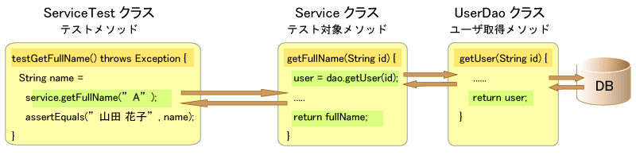
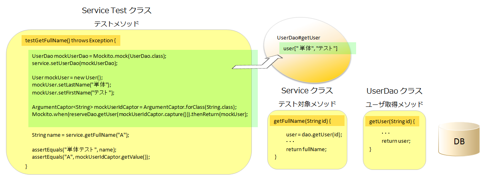
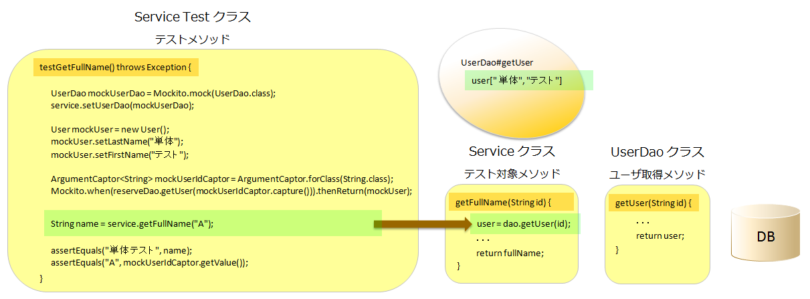
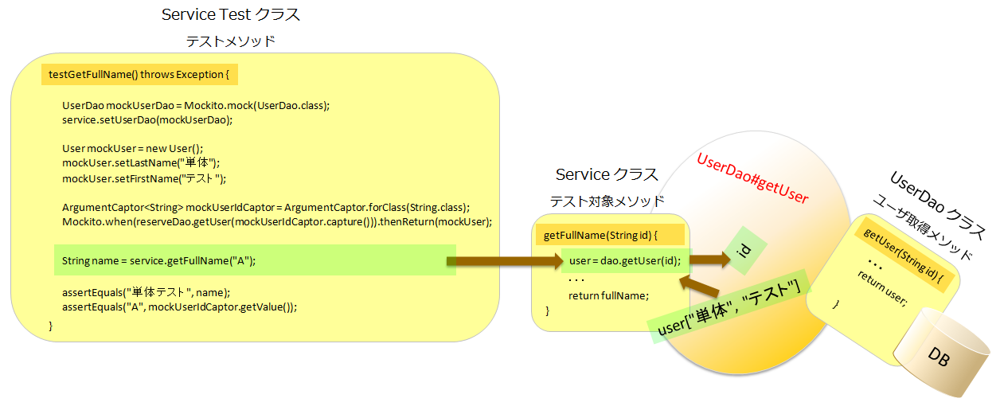
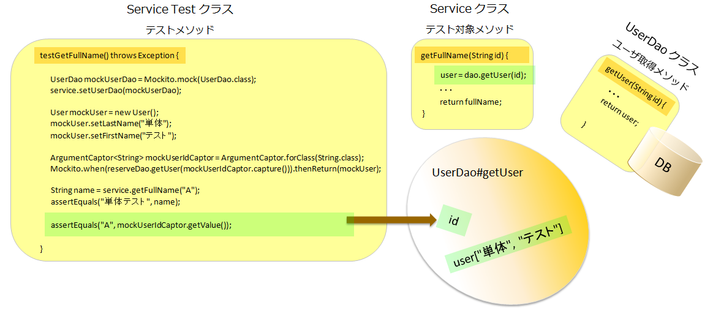

Mockito
Mockito
Mockito はバイトコードの書き換えにより、モッククラスが存在するかのようなテストを記述する仕組みを提供します。
といっても、イメージが難しいと思いますので、とりあえず使ってみることにします。
Mockito の設定
まずは、Mockito を使用する環境を整えます。
と言ってもやることは、Mockito で使用する jar ファイルをクラスパスに追加するだけです。
下記ディレクトリにあるファイルをプロジェクト内の任意のディレクトリにコピーし
mockito libraries
プロジェクトを右クリック → [Properties] → [Java Build Path] → [Libraries] → [Add JARs...]
で、プロジェクトのビルドバスに追加します。
基本的な使い方
次のようなコードをテストすることを考えます。
public class UserService {
public String getFullName(String id) {
String fullName = null;
UserDao dao = new UserDao();
User user = dao.getUser(id);
if (user != null) {
fullName = user.getLastName() + " " + user.getFirstName();
}
return fullName;
}
}
このメソッドは UserDao のメソッドを使用してユーザを取得し、
取得したユーザから「姓」「名」を取得して、「氏名」 を生成し、返却します。
このメソッドの責任は UserDao のメソッドに対して「正しい引数を渡すこと」と、
「戻り値のユーザを使用して、半角スペースを挟んだ氏名を正確に作成し返却すること」 の ２点です。
この２点を検証するために、Dao の戻り値を固定にして、期待する「氏名」 が生成されることと、
UserDao にたいして、「A」 という引数を正確に渡していることを確認します。
ただし、このままでは少し苦しいので、以下のように、UserDao を外から自由に設定できるように変更します。
public class UserService {
private UserDao dao = new UserDao();
public setUserDao(UserDao userDao) {
this.userDao = userDao;
}
public String getFullName(String id) {
String fullName = null;
User user = dao.getUser(id);
if (user != null) {
fullName = user.getLastName() + " " + user.getFirstName();
}
return fullName;
}
}
Mockito を使用すると、以下のようなコードで、このテストを行うことができます。
@Test
public void testGetFullName() throws Exception {
// 条件（モックの設定）
UserDao mockUserDao = Mockito.mock(UserDao.class);
service.setUserDao(mockUserDao);
User mockUser = new User();
mockUser.setLastName("単体");
mockUser.setFirstName("テスト");
ArgumentCaptor<String> mockUserIdCaptor = ArgumentCaptor.forClass(String.class);
Mockito.when(reserveDao.getUser(mockUserIdCaptor.capture())).thenReturn(mockUser); --- (1)
// 実行
String name = service.getFullName("A");
// 結果
assertEquals("単体 テスト", name);
assertEquals("A", mockUserIdCaptor.getValue()); --- (2)
}
(1) は、テスト対象の getFullName() メソッド内で呼ばれる UserDao クラスの getUser() メソッドの戻り値を固定で設定しています。
(2) は、UserDao クラスの getUser() メソッドへ渡された引数を取得し、"A" と比較をしています。
コードだけではわかりにくいと思いますので、上記のコードをイメージ的に表現してみます。
尚、あくまでイメージ的な話であり、Mockito の実際のテクニカルな話ではありません。
Mockito を使用しない場合

まずは、モック等を使用せずに普通のJUnitテストを使って、getFullName() メソッドの テストをした場合の処理の流れを見てみます。
テスト対象の Service クラスの getFullName(id) メソッドを実行して確認しています。
Service クラスは内部で UserDao クラスを呼び出し、Dao はDBへのアクセスを行っています。
Mockito を使用した場合
Mockito を使用するとこの処理の流れがどう変わるのかを見てゆきます。
まず、上記のコードでは、 「thenReturn()」 を呼び出しています。
すると、動的にモックが作成され、クラス名、メソッド名と オブジェクトをセットされた状態となります。

次に、テスト対象のメソッド getFullName(id) を呼び出します。

この getFullName(id) メソッド内で、UserDao の getUser() メソッドが呼び出されようとした瞬間、
Mockito が、Service クラスと UserDao クラス の間に割り込みます。
自分が保持するクラス名、メソッド名に該当する メソッドが呼び出されたからです。
Mockito は、渡されてきた引数を引き取り、最初に設定されたオブジェクトを戻り値として返却します。

Service クラスの処理が終わった後、Mockito が保存している 渡された引数を、Mockito から取得して、検証することができます。

この流れの中で、UserDao クラスは一度もアクセスされませんでした。
これが、基本的な動作のイメージです。
Mockito の使い方
以下では、Mockito を使って、実際に Servlet のテストを行って行きますが、
Mockito に用意されている様々なメソッドの一部しか使いません。
細かい使い方については下記のドキュメントを参照してください。
参考）http://site.mockito.org/mockito/docs/current/org/mockito/Mockito.html
サーブレットメソッドのJUnitテスト
それでは、HttpTC (サーブレット用モック)、Mockito を利用した テストを実装してみます。
まずは、正常なテストケースです。
private ReserveDao reserveDao;
@Before
public void setUp() throws Exception {
servlet = new ShowReserveServlet();
servlet.init(HttpTCHelper.config);
super.setUp();
this.reserveDao = Mockito.mock(ReserveDao.class);
servlet.dao = this.reserveDao;
Mockito.when(reserveDao.getRoomList()).thenReturn(roomList);
}
・・・
/**
* <pre>
* 【概要】
* ・更新ボタンを押下したとき施設リストと予約リストが取得されること.
*
* 【条件】
* リクエストパラメータ
* ・update : 更新
*
* 呼び出しメソッド戻り値
* ・{@link ReserveDao#getRoomList()} : 施設リスト
* ・{@link ReserveDao#getReserveList(Calendar reserveDate)} : 予約リスト
*
* 【実行】
* ・doPost
*
* 【結果】
* 呼び出しメソッド引数
* ・{@link ReserveDao#getRoomList()} : 施設リスト
* ・{@link ReserveDao#getReserveList(Calendar reserveDate)} : 予約リスト
*
* リクエスト情報
* ・{@link ReserveServlet#RESERVE_LIST} : 予約リスト
* ・{@link ReserveServlet#ROOM_LIST} : 施設リスト
*
* 遷移先情報
* ・WEB-INF/jsp/reserve.jsp
*
* </pre>
*/
@Test
public void testDoPostGetReserveListRoomList() throws Exception {
// 条件
request.addParameter("update", "更新");
ArgumentCaptor<java.sql.Date> mockDateCaptor = ArgumentCaptor.forClass(java.sql.Date.class);
Mockito.when(reserveDao.getReserveList(mockDateCaptor.capture())).thenReturn(reserveList);
// 実行
servlet.doPost(request, response);
// 結果
assertEquals("2008-07-15", mockDateCaptor.getValue().toString());
assertSame(reserveList, request.getAttribute("RESERVE_LIST"));
assertSame(roomList, request.getAttribute("ROOM_LIST"));
this.assertForwradPath("WEB-INF/jsp/reserve.jsp");
}
まず、JavaDoc の、【条件】となっている部分を見てください。
ここには、メソッドの実行前に設定しておくべき項目が挙げられています。
『 リクエストパラメータ 』 は、doPost() 実行時に、request.getParameter("update") メソッドで取得される値です。
これは、以下のように記述することによって、HttpTC クラスの request モックオブジェクトに設定することができます。
request.addParameter("update", "更新");
チェックボックスなどにて、同じキーで複数の値が送信されるような場合は、 addParameter() メソッドの第２引数に配列を指定します。
request.addParameter("key", new String[]{"value1", "value2", "value3"});
『 セッション情報 』 は、上記のテストに記載されていませんが、
doPost() 実行時に、session.getAttribute("LOGIN_USER") メソッドで取得される値です。
メソッドの実行直前に以下のように HttpTC クラスの session モックオブジェクト内に格納します。
session.setAttribute(user, "LOGIN_USER"));
『 呼び出しメソッド戻り値 』 は、Mockito の機能を利用します。
Mockito.when() ～ thenReturn() メソッドを使用することで、
ここで指定されたオブジェクト、指定されたメソッドに対する呼び出しは Mockito で処理されるようになります。
ここで、施設一覧取得 のリストはどのテストでも共通に使用するため、
テストクラスのメンバとし、setUp() メソッドで初期化するようにしてあります。
@Before
public void setUp() throws Exception {
・・・
Mockito.when(reserveDao.getRoomList()).thenReturn(roomList);
}
尚、戻り値を void とするような DAO のメソッドがあった場合、以下のようなコードを記述します。
doNothing().when(オブジェクト).戻り値がvoidのメソッド();
ユーティリティメソッドなどのように、同じクラスの同じメソッドが何回も呼び出されるような場合、
各呼び出しで使用される戻り値を変更したい場合は、以下のようなコードを使用します。
// ReserveUtil#isValidReserves() を1回目の呼び出し時は false を返し、2回目以降の呼び出し時は true を返すように設定
PowerMockito.mockStatic(ReserveUtil.class);
when(ReserveUtil.isValidReserves()).thenReturn(false).thenReturn(true);
【条件】 が全て設定できたら、 【実行】 で doPost() メソッド を呼び出します。
引数には、前提条件が詰められている HttpTC の request モックオブジェクト, response モックオブジェクトを指定します。
servlet.doPost(request, response);
doPost() メソッドが終了したら、【結果】 が全て予想通りかどうかを検証していきます。
『 呼び出しメソッド引数 』 では、
テスト対象のクラスが他のメソッド呼び出しの際に、正しい引数を渡していることを検証します。
【条件】 にて、ArgumentCaptor を使って呼び出されたメソッドについては、Mockito から引数を取得することができます。
mockDateCaptor.getValue() として、
ReserveDao の getReserveList() メソッドに引数として渡された値を取得しています。
assertEquals("2008-07-15", mockDateCaptor.getValue().toString());
『 リクエスト情報 』 では、現在のリクエスト内に格納されている情報を確認します。
JSP等で必要となる情報が、doPost() 実行後にリクエスト内に格納されていることを検証します。
リクエスト内に格納された情報は、サーブレットで通常処理する場合と同じように、「request.getAttribute("key")」 を使用して取得します。
ここでは、Dao から取得したリストが、そのままリクエスト内に格納されていることを確認します。
Dao メソッドの戻り値がそのまま リクエスト内に格納されることが検証できればよいため、assertSame (JUnitのメソッド) を使用しています。
これは、オブジェクト同士を 「equals()」 ではなく、「==」 を使用して比較するメソッドです。
assertSame(reserveList, request.getAttribute("RESERVE_LIST"));
assertSame(roomList, request.getAttribute("ROOM_LIST"));
『 セッション情報 』 では、JSP等で必要となる情報が、doPost() 実行後にセッション内に格納されていることや、
ログアウトの際などに、セッションから情報が削除されたことを検証します。
セッション内に格納された情報は、サーブレットで通常処理する場合と同じように、「session.getAttribute("key")」 を使用して取得します。
ここでは、例としてセッション内に保持されているユーザ名が、該当するIDから取得されたユーザ名と同じか確認しています。
session オブジェクトから取得した、"A" と同じユーザ名であることを検証しています。
assertEquals("A", session.getAttribute("LOGIN_USER"));
『 遷移先情報 』 は、doPost() 実行後に、遷移先の情報が指定されているかどうかを確認します。
遷移先が指定されているかどうかの確認は、HttpTC クラスが持つ遷移先確認用のメソッド、assertForwradPath() を使用して検証を行います。
this.assertForwradPath("WEB-INF/jsp/reserve.jsp");
次に例外が発生するケースを例にします。
/**
* <pre>
* 【概要】
* ・「login」が送信されたが、ユーザ取得にて例外が発生した場合、
* Exceptionがスローされること。
*
* 【条件】
* リクエストパラメータ
* ・login : ログイン
* ・userId : 123ABC
*
* 呼び出しメソッド戻り値
* ・{@link ReserveDao#getUser(String)} : {@link Exception}
*
* 【実行】
* ・doPost
*
* 【結果】
* 呼び出しメソッド引数
* ・{@link ReserveDao#getUser(String)} : id=123ABC
*
* セッション情報
* ・{@link ReserveServlet#LOGIN_USER} : null
*
* 例外
* ・{@link Exception}
*
* </pre>
*/
public void testDoPostLoginThrowException() throws Exception {
try {
// 条件
request.addParameter("login", "ログイン");
request.addParameter("userId", "123ABC");
PowerMockito.mockStatic(ReserveUtil.class);
when(ReserveUtil.isEmpty()).thenReturn(false);
Mockito.doThrow(new Exception("ReserveDao#getUser")).when(reserveDao.getUser(Mockito.anyString()));
// 実行
servlet.doPost(request, response);
fail();
} catch (ServletException e) {
assertNull(session.getAttribute("LOGIN_USER"));
Throwable t = e.getRootCause();
assertEquals("ReserveDao#getUser", t.getMessage());
}
}
正常のケースと違う部分は、【条件】 の、
Mockito.doThrow(new Exception("ReserveDao#getUser")).when(reserveDao.getUser(Mockito.anyString()));
です。ここでは、メソッドの戻り値に、「例外」 を生成して設定しています。
例外のテストで気をつけなければいけないのは、例外を発生させる部分までに呼び出す他のユーティリティやDaoのメソッドがあった場合、
Mockito を利用して、本物のDao などが呼び出されないようにしておく必要があるということです。
©日本インサイトテクノロジー株式会社